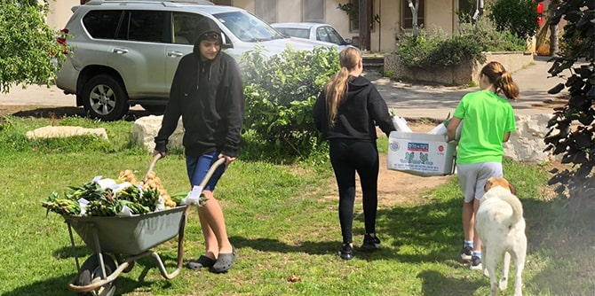
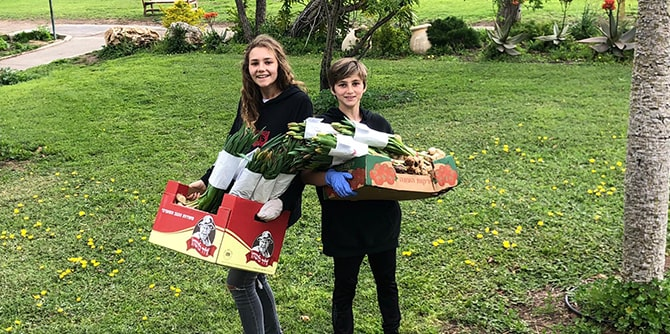
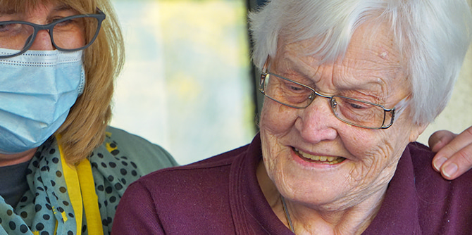

עם פרוץ משבר קורונה נקלעו המערכות העירוניות והקהילתיות למצב חירום ונאלצו להשבית רבים מן השירותים החברתיים והקהילתיים שהן מספקות. להשבתה זו השפעה קשה על יכולתה של הקהילה להתמודד עם המצב. בשל כך התעורר הצורך לנקוט פעולה כדי לאפשר לציבור להתמודד עם המשבר המתפתח – פעולה שתדגיש את החוסן הקהילתי כגורם מרכזי בהתמודדות עם שגרת חירום מתמשכת.
שני מומחים לתחום הקהילה בוגרי מנדל חברו יחד כדי להתמודד עם הצורך הזה: אסטרטגיות קהילתיות, ארגון לחיזוק החוסן הקהילתי וההון החברתי בניהולו של גיא צפוני, וד"ר שרה שדמי-וורטמן – מומחית בכירה לחיזוק קהילתיות וההון החברתי. שני בוגרי בית ספר מנדל למנהיגות חינוכית – מחזור ו' (צפוני) ומחזור ד' (שדמי-וורטמן) חברו לעמותת מהו"ת ישראל, עמותה המתמחה בהיערכות לחירום ובניית חוסן.
היוזמה הלאומית שגיבשו צפוני ושדמי-וורטמן שמה לה למטרה להגדיל ולמנף את כוחה ויכולתה של הקהילה עצמה, במטרה לאפשר המשכיות של פונקציות קהילתיות חשובות בשלב השגרה של המשבר. התוכנית מיועדת ליישום ב-80 קהילות, והיא מבקשת לחזק את העוצמה, את הסולידריות החברתית ואת יכולת התמודדות בשלושה סוגים של קהילות: קהילות חינוך לילדים ולנוער, קהילות של צעירים (סטודנטים ופעילים בקהילה), וקהילות של אזרחים ותיקים.

כדי להשיג את יעדיה, היוזמה הרכיבה צוות מומחים מתחום החירום, מתחום החוסן ומתחום הקהילה לשם יצירת מודל של חוסן קהילתי המתאים לשגרה וזמין לתקופת חירום ממושכת. מובילי היוזמה גם פיתחו שותפויות בין-ארגוניות שיאפשרו את יישום המודל הזה ב-80 קהילות ברחבי ישראל, ומספקים הדרכה והכוונה לאנשי המקצוע שעתידים ליישם את המודל בקהילות עצמן. התהליך כולו מתועד, מפוקח ומוערך על-ידי שני הארגונים המייסדים.
כחלק מיוזמה שיתופית זו, צפוני ושדמי-וורטמן משתפים פעולה עם שלושה ארגונים הפעילים בתחום, שכל אחד מהם משרת את אחת משלוש אוכלוסיות היעד:
שבילים, רשת החינוך קהילתית של המגזר הכפרי בישראל, המנוהלת על-ידי התנועה הקיבוצית;
תוצרת הארץ, שהוקם על-ידי התאחדות הסטודנטים הארצית ומפעיל כ-60 קהילות סטודנטים בפריפריה הסוציו-גאוגרפית בישראל; וקהילה לדורות, שהוקם על-ידי הג'וינט, משרד הרווחה וקרן דליה ואלי הורביץ, ומספק מענה אינטגרטיבי לצרכיהם של אזרחים ותיקים.

עבור קהילות החינוך היישוביות, השלב הראשון של המשבר היה קשה במיוחד, מכיוון שבניגוד למערכות אחרות שעברו למצב חירום, החינוך הבלתי-פורמלי הושבת ברובו, ורוב הצוות המקצועי הוצא לחל"ת. על צוותי החירום המקומיים הוטלה האחריות לילדים ולנוער, ומנהלי קהילות, רכזי תרבות ומתנדבים סיפקו חלופות לבית הספר. עם התפתחות המשבר תהו אנשי חינוך ביישובים אלו מדוע מערכת החינוך הבלתי-פורמלית אינה נתפסת כנכס וכמשאב להתמודדות עם המשבר, ומדוע החוסן הקהילתי שבנתה לעתות שגרה, אינו מתאים לשעת חירום.
כדי להתמודד עם השאלות הללו והמשבר עצמו, פתחו מובילי הפרויקט בתהליך מואץ לפיתוח מודל של חוסן בחינוך הקהילתי/מקומי הבלתי-פורמלי, הן למצבי חירום והן לתרחיש שבו אנו חיים – תקופה ממושכת בצל נגיף קורונה. את המודל מפתח צוות מומחים רב-תחומי, יחד עם 12 יועצים-מומחים משבילים העובדים עם יותר מ-70 קהילות חינוך בלתי-פורמליות ברחבי ישראל. המודל ינוסה ב-30 יישובים, ואפשר ליישמו בלא פחות מ- 800 קהילות יישוביות בכל רחבי הארץ (מועצות אזוריות, יישובים קהילתיים, מושבים וקיבוצים).
אשר לקהילות הסטודנטים, כאשר הופסקו הלימודים האקדמיים בשל הסגר, החלו סטודנטים רבים לפעול במסגרת היערכות החירום העירונית. הם חילקו אוכל ותרופות, איישו קווי סיוע, הסיעו אנשים לפגישות וכו'. בהתגייסותם של הסטודנטים למערך החירום העירוני להספקת שירותי החירום, לא מימשו הסטודנטים את תרומתם הייחודית ולא הביאו הערך המוסף של חוסן קהילתי בחירום. הערך המוסף של קהילות הסטודנטים בשגרה, בערים שבהן הם פועלים, הוא חיזוק הקהילתיות הבא לידי ביטוי בהגברת ההשתתפות, המעורבות והשייכות של התושבים בשכונות בעיר. כאמור, בזמן משבר הקורונה הושבתה שליחות זו והסטודנטים נרתמו למשימות "דחופות" של רציפות תפקודית עירונית. ברוב הערים לא היה מחסור במתנדבים לסוג זה של פעילות, ועם זאת, אין שום גורם אחר בערים אשר לוקח על עצמו את הפעלת החוסן הקהילתי בזמן החירום. בתהליך המוצע, הנהגת קהילות הסטודנטים –
תוצרת הארץ, ילמדו ויתחקרו את אירוע הקורונה ויבחנו דרכים חדשות לביסוס חוסן קהילתי בשגרה אשר יעמוד לרשותם גם בחירום.

אשר לקהילות האזרחים הוותיקים, היוזמה מובילה ניתוח בפריסה ארצית של ההצלחות והכישלונות של קהילות אלו במהלך משבר הנגיף, כדי לייצר ארגז כלים מקצועי לחיזוק אוכלוסייה זו – הן בתקופות של משבר חריף והן במצב של שגרת חירום. מובילי היוזמה יפנו למחלקות הרווחה, למרכזים קהילתיים ולקבוצות של מנהיגי קשישים ברחבי הארץ כדי להשיג דוגמאות למנגנונים מוצלחים של חוסן קהילתי ששימשו אוכלוסייה זו במהלך המשבר. דוגמאות אלו ישמשו בסיס למודל עתידי לקהילה זו. המודל ייושם תחילה ב-30 קהילות של אזרחים וותיקים, שיקבלו הכשרה אינטנסיבית והדרכה ביישום המודל כהכנה לאפשרות של גל שני להתפרצות הנגיף. לאחר שיוסקו מסקנות מן הניסוי, המודל המתוקף יהיה מרכיב מרכזי בהכשרת בעלי מקצוע (עובדים קהילתיים) אשר יישמו ויטמיעו את המודל ב-90 יישובים ברחבי ישראל.
יוזמה שיתופית זו, בהובלת
אסטרטגיות קהילתיות ומהו"ת ישראל, נועדה לאפשר פריסה והשפעה מהירות ברמה הלאומית. באמצעות גיוס ארגונים העובדים עם אוכלוסיות שונות ברחבי הארץ, ליוזמה תהיה השפעה על מובילי דעת קהל, קובעי מדיניות, ראשי מערכות חינוך, עובדי קהילה, סוכני שינוי, פעילים ומנהיגי קהילות ברחבי ישראל. הדבר יאפשר לתוכנית להשפיע על מגזרים גדולים בחברה, ויחדיר בקרב הציבור לא רק את הצורך לדבוק בתקנות משרד הבריאות, שהיה הדבר העיקרי בשלב הראשוני והחריף של משבר הנגיף, אלא גם את תחושת המשמעות, השייכות, השותפות והמעורבות. עקב כך, התנהגות אחראית תהפוך לחלק מהדי-אן-אי של הקהילה, ותפעל מלמטה למעלה, ולא רק מלמעלה למטה. הדבר יגביר את העוצמה ואת הסולידריות של הקהילה, הן במצב החירום החריף והן במצב החירום המתמשך שכופה המגפה העולמית.
{kind=link}
{kind=link}
{kind=link}